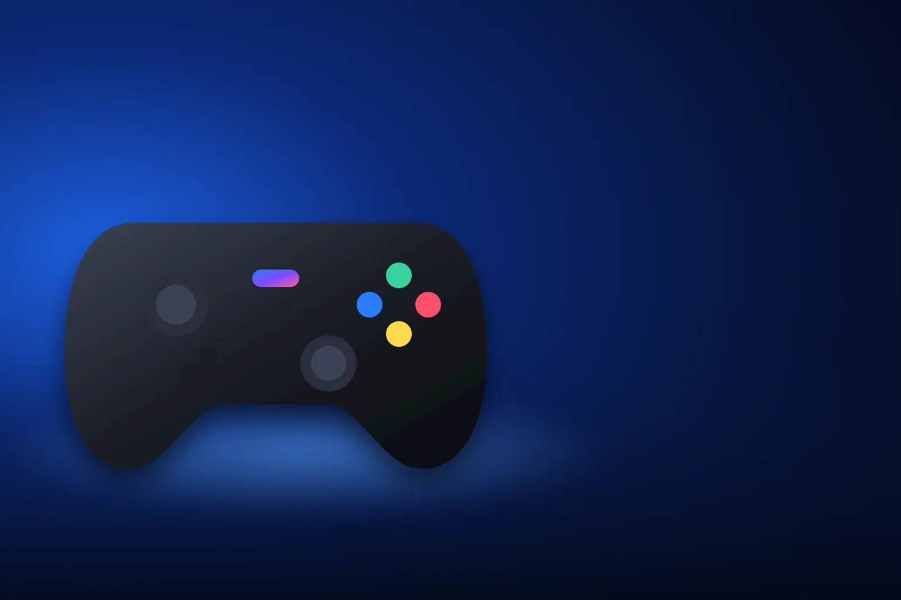

PC E ANDROID
Melhor controle para PC
Para jogar no Steam, em emulador e no Game Pass do PC: sem fio de baixa latência e analógico que não dá drift.

Melhor custo-benefício para PC8BitDo Ultimate 2C (sem fio)
CURADORIA TECHAPROVADO · 2026
PC, console ou celular: cada plataforma pede um controle diferente, e o mais caro nem sempre é o certo. Separamos 15 modelos em 3 perfis, do custo-benefício ao top de linha, e dizemos para quem cada um vale a pena.

NOSSA LEITURA
Controle de PC raramente funciona no PS5 ou no Xbox sem fio; no console, só os oficiais e licenciados. No PC, prefira os que usam o padrão do Xbox. E repare nos analógicos Hall Effect ou TMR: eles não dão drift.
COMECE POR AQUI
PC E ANDROID
Para jogar no Steam, em emulador e no Game Pass do PC: sem fio de baixa latência e analógico que não dá drift.
XBOX E PLAYSTATION
O segundo controle do console, o original com vibração especial ou o profissional, com botões traseiros.

CELULAR
Para Call of Duty Mobile, emuladores e jogos na nuvem: o celular vira um portátil de videogame.

A FICHA, TRADUZIDA
01 - DRIFT E HALL EFFECT
Drift é quando o analógico registra movimento sem você tocar nele: o personagem anda sozinho. Acontece com o desgaste dos sensores comuns, que funcionam por contato.
Os analógicos Hall Effect e TMR leem a posição por ímã, sem contato, e por isso não se desgastam do mesmo jeito.
Nesta seleção, os 8BitDo, os GameSir e o Cyclone 2 têm Hall Effect ou TMR. Os controles oficiais do Xbox e do PS5 usam sensores comuns (no DualSense Edge, o módulo é trocável).
02 - CONEXÃO
O fio não tem atraso nem bateria. O sem fio de 2,4 GHz, com receptor USB, tem atraso imperceptível. O Bluetooth é prático, mas tem um atraso pequeno.
A taxa de resposta (polling rate) diz quantas vezes por segundo o controle manda informação: 1.000 Hz é o topo e ajuda em jogo competitivo.
No celular, o controle de encaixe USB-C não tem atraso nem bateria.
03 - COMPATIBILIDADE
No PC, o padrão do Xbox (XInput) é reconhecido por quase todos os jogos. Controles de PlayStation funcionam no Steam com configuração.
No Xbox e no PS5, só funcionam controles oficiais ou licenciados. Os de PC desta lista não funcionam sem fio nos consoles.
No celular, quase tudo funciona por Bluetooth; para iPhone com Lightning, prefira Bluetooth.
04 - BOTÕES TRASEIROS
Os botões traseiros ficam embaixo do controle, onde os dedos do meio descansam. Eles repetem outros botões, para pular ou recarregar sem tirar o polegar do analógico.
Fazem diferença em jogos de tiro e competitivos. Para jogar campanha, não são necessários.
O Xbox Elite Series 2 e o DualSense Edge têm botões traseiros nesta seleção.
05 - BATERIA
O controle do Xbox usa pilhas AA, que duram bastante e são fáceis de trocar. O DualSense e a maioria dos outros têm bateria recarregável por USB-C.
Bases de carregamento, como a do 8BitDo Ultimate 2, deixam o controle sempre pronto.
Recursos como vibração forte e luz gastam bateria: desligá-los aumenta a duração.
A CURADORIA EM DETALHE
15 modelos da pesquisa
PERFIL · 5 MODELOS, DA ENTRADA AO TOP DE LINHA
No PC, quase todo controle funciona no padrão do Xbox (XInput), então os jogos reconhecem na hora. O que separa os modelos é a conexão sem fio de 2,4 GHz, a taxa de resposta (1.000 Hz nos melhores) e os analógicos Hall Effect ou TMR, que usam ímãs e não sofrem com drift, o defeito em que o boneco anda sozinho.

PC · ENTRADA 1 de 5
Com fio · layout de console · cabo de 1,8 m
Ver preço na AmazonPOR DENTRO DA ESCOLHA
O controle com fio mais confiável para começar: layout parecido com o do PlayStation, cabo de 1,8 metro e funcionamento imediato no PC e na TV com USB.
O F310 é o controle que nunca dá problema: liga e funciona. Para quem quer sem fio e analógicos que não dão drift, o 8BitDo Ultimate 2C custa pouco mais.
| Conexão | Com fio USB, 1,8 m |
|---|---|
| Layout | Estilo PlayStation |
| Compatível | PC, TV, Android (com OTG) |
Fonte: ficha e descrição do anúncio, conferidas em 16/11/2026. Dados informados pelo fabricante.
PC · CUSTO-BENEFÍCIO 2 de 5
Melhor custo-benefício para PC
2,4 GHz · 1.000 Hz · analógicos e gatilhos Hall Effect
Ver preço na AmazonPOR DENTRO DA ESCOLHA
O salto é tudo de uma vez: sem fio de 2,4 GHz com resposta de 1.000 Hz, analógicos e gatilhos Hall Effect, que usam ímã e não sofrem drift, e anéis de metal nos analógicos.
O Ultimate 2C é o controle de PC com o melhor custo-benefício da seleção: tem os recursos de modelos caros (Hall Effect e 1.000 Hz) pelo preço de um controle básico. Para a maioria, é o ponto de parada.
| Conexão | Sem fio 2,4 GHz e com fio |
|---|---|
| Taxa de resposta | 1.000 Hz |
| Analógicos | Hall Effect |
| Gatilhos | Hall Effect |
| Compatível | Windows 10+, Android 9+ |
Fonte: ficha e descrição do anúncio, conferidas em 16/11/2026. Dados informados pelo fabricante.

POR DENTRO DA ESCOLHA
O salto é precisão: analógicos TMR, uma evolução do Hall Effect com leitura ainda mais fina e consumo menor, resposta de 1.000 Hz e conexão sem fio para PC.
O Cyclone 2 é para quem quer o analógico mais preciso desta faixa. Em jogos casuais, o 8BitDo resolve; em competitivo, o TMR faz diferença.
| Analógicos | TMR |
|---|---|
| Taxa de resposta | 1.000 Hz |
| Conexão | Sem fio e com fio |
| Compatível | PC |
Fonte: ficha e descrição do anúncio, conferidas em 16/11/2026. Dados informados pelo fabricante.

PC · ALTERNATIVA 4 de 5
Outro caminho: base de carregamento e Bluetooth
TMR · 2,4 GHz e Bluetooth · base de carregamento
Ver preço na AmazonPOR DENTRO DA ESCOLHA
O desvio é conforto de uso: analógicos TMR, conexão sem fio 8Speed de 2,4 GHz e Bluetooth, e base de carregamento: é só encostar o controle na base depois de jogar.
O Ultimate 2 é o 2C com base e Bluetooth. Se você sempre esquece o controle sem bateria, a base vale a diferença.
| Analógicos | TMR |
|---|---|
| Conexão | 2,4 GHz (8Speed), Bluetooth, com fio |
| Extra | Base de carregamento |
| Compatível | Windows, Android |
Fonte: ficha e descrição do anúncio, conferidas em 16/11/2026. Dados informados pelo fabricante.

PC · TOP DE LINHA 5 de 5
Top de linha para PC
Licenciado Xbox · 2,4 GHz e Bluetooth · tri-mode
Ver preço na AmazonPOR DENTRO DA ESCOLHA
O topo: conexão em três modos, com fio no Xbox, sem fio de 2,4 GHz no PC e Bluetooth no Android, com troca por um botão físico. Construção premium e licença oficial do Xbox.
O G7 Pro é o controle mais versátil da seleção: vai do PC ao Xbox sem trocar. Para quem só joga no PC, o 8BitDo 2C entrega o essencial por menos.
| Conexão | Xbox com fio, PC 2,4 GHz, Android Bluetooth |
|---|---|
| Licença | Xbox |
| Troca de modo | Botão físico |
Fonte: ficha e descrição do anúncio, conferidas em 16/11/2026. Dados informados pelo fabricante.
PERFIL · 5 MODELOS, DA ENTRADA AO TOP DE LINHA
No console, o controle precisa ser oficial ou licenciado. A escada vai de um controle com fio licenciado do Xbox ao Elite Series 2, com botões traseiros e tensão regulável. No PS5, o DualSense tem gatilhos adaptáveis e resposta tátil que nenhum outro controle reproduz.

CONSOLE · ENTRADA 1 de 5
Licenciado Xbox · cabo USB-C de 3 m
Ver preço na AmazonPOR DENTRO DA ESCOLHA
O segundo controle barato do Xbox: licenciado pela Microsoft, layout igual ao oficial e cabo USB-C de 3 metros, para jogar do sofá.
O PowerA com fio é a forma mais barata de ter um segundo controle oficial no Xbox. Para jogar sem fio, o controle Xbox oficial é o próximo degrau.
| Conexão | Com fio, USB-C, 3 m |
|---|---|
| Licença | Xbox |
| Compatível | Xbox Series X|S, Xbox One, PC |
Fonte: ficha e descrição do anúncio, conferidas em 16/11/2026. Dados informados pelo fabricante.
CONSOLE · CUSTO-BENEFÍCIO 2 de 5
Melhor custo-benefício para Xbox
Oficial Microsoft · Bluetooth · Xbox, PC e celular
Ver preço na AmazonPOR DENTRO DA ESCOLHA
O controle oficial do Xbox: sem fio no console, Bluetooth no PC, celular e tablet, botão Compartilhar e uma pegada confortável para mãos de vários tamanhos.
O controle Xbox é o padrão dos jogos de PC e o mais versátil da seleção: funciona em tudo, menos no PlayStation. Para a maioria, é o controle certo.
| Conexão | Xbox Wireless, Bluetooth, USB-C |
|---|---|
| Compatível | Xbox Series X|S, Xbox One, PC, celular |
| Energia | Pilhas AA |
Fonte: ficha e descrição do anúncio, conferidas em 16/11/2026. Dados informados pelo fabricante.

CONSOLE · ALTERNATIVA 3 de 5
Outro caminho: o controle do PS5
Gatilhos adaptáveis · resposta tátil · microfone
Ver preço na AmazonPOR DENTRO DA ESCOLHA
O controle do PS5: gatilhos adaptáveis, que ficam mais duros ao puxar o arco, resposta tátil, que faz sentir a chuva ou a textura do chão, microfone embutido e bateria recarregável.
O DualSense é a escolha óbvia para o PS5. É um desvio na escada porque é de outra plataforma, não um degrau acima do Xbox.
| Recursos | Gatilhos adaptáveis, resposta tátil, microfone |
|---|---|
| Bateria | Recarregável, USB-C |
| Compatível | PS5, PC |
Fonte: ficha e descrição do anúncio, conferidas em 16/11/2026. Dados informados pelo fabricante.

CONSOLE · AVANÇADO 4 de 5
Botões traseiros · analógicos trocáveis · perfis
Ver preço na AmazonPOR DENTRO DA ESCOLHA
O DualSense profissional: botões traseiros, módulos de analógico trocáveis (se der drift, troca só o módulo), regulagem do curso dos gatilhos e perfis de configuração.
O Edge é para o jogador sério de PS5: os botões traseiros e os analógicos trocáveis valem para quem joga todo dia. Para jogar campanha, o DualSense basta.
| Botões traseiros | Sim |
|---|---|
| Analógicos | Módulos trocáveis |
| Gatilhos | Curso regulável |
| Compatível | PS5, PC |
Fonte: ficha e descrição do anúncio, conferidas em 16/11/2026. Dados informados pelo fabricante.

CONSOLE · TOP DE LINHA 5 de 5
Top de linha para console
4 botões traseiros · tensão regulável · bateria de até 40 h
Ver preço na AmazonPOR DENTRO DA ESCOLHA
O topo: o controle profissional do Xbox, com quatro botões traseiros, tensão dos analógicos regulável, gatilhos com trava de curso, peças trocáveis e bateria interna.
O Elite Series 2 é o controle mais personalizável que existe para Xbox e PC. Vale para quem joga muitas horas e competitivo; para os outros, o controle oficial resolve.
| Botões traseiros | 4 |
|---|---|
| Analógicos | Tensão regulável, peças trocáveis |
| Gatilhos | Trava de curso |
| Compatível | Xbox Series X|S, Xbox One, PC |
Fonte: ficha e descrição do anúncio, conferidas em 16/11/2026. Dados informados pelo fabricante.
PERFIL · 5 MODELOS, DA ENTRADA AO TOP DE LINHA
O controle de celular pode ser Bluetooth, com suporte para prender o celular em cima, ou do tipo que encaixa o celular no meio e liga pelo USB-C, sem atraso e sem bateria. A escada sobe em conforto, analógicos Hall Effect e compatibilidade com iPhone e tablet.

CELULAR · ENTRADA 1 de 5
Bluetooth · suporte para celular · Android, iPhone e PC
Ver preço na AmazonPOR DENTRO DA ESCOLHA
O controle de celular mais barato da seleção: Bluetooth, suporte para prender o celular em cima e compatibilidade com Android, iPhone, PC e PS3.
O Ipega é a porta de entrada. Para jogar com frequência, os modelos da GameSir mais abaixo são bem mais confortáveis e precisos.
| Conexão | Bluetooth |
|---|---|
| Suporte | Para celular |
| Compatível | Android, iPhone, PC, PS3 |
Fonte: ficha e descrição do anúncio, conferidas em 16/11/2026. Dados informados pelo fabricante.

CELULAR · ALTERNATIVA 2 de 5
Outro caminho: o controle de bolso
Cabe no bolso · 24,8 g · Bluetooth
Ver preço na AmazonPOR DENTRO DA ESCOLHA
O controle de bolso: pesa 24,8 g, tem 16 botões e Bluetooth, funciona com Switch, Android e Raspberry Pi e também como atalho de teclado para desenho no tablet.
O Micro é um desvio para o retrô e para quem viaja: cabe em qualquer lugar. Para jogos modernos, prefira um controle de encaixar.
| Peso | 24,8 g |
|---|---|
| Botões | 16 |
| Conexão | Bluetooth |
| Compatível | Switch, Android, Raspberry Pi |
Fonte: ficha e descrição do anúncio, conferidas em 16/11/2026. Dados informados pelo fabricante.
CELULAR · CUSTO-BENEFÍCIO 3 de 5
Melhor custo-benefício para celular
Encaixa o celular · USB-C sem atraso · Hall Effect
Ver preço na AmazonPOR DENTRO DA ESCOLHA
O salto é o formato: o celular encaixa no meio, como num console portátil, e liga pelo USB-C, sem atraso e sem bateria. Analógicos Hall Effect, que não dão drift, e plug and play.
O G8 Galileo transforma o celular num portátil de verdade: confortável, preciso e sem atraso. Para quem joga no celular toda semana, é o ponto de parada.
| Conexão | USB-C (sem bateria) |
|---|---|
| Analógicos | Hall Effect |
| Compatível | Android e iPhone 15 ou mais novo |
Fonte: ficha e descrição do anúncio, conferidas em 16/11/2026. Dados informados pelo fabricante.

CELULAR · AVANÇADO 4 de 5
Bluetooth · encaixa celular e tablet pequeno · Hall Effect
Ver preço na AmazonPOR DENTRO DA ESCOLHA
O G8 em versão Bluetooth: encaixa celulares de qualquer conector e tablets pequenos, com analógicos e gatilhos Hall Effect. Funciona também no Switch.
O G8 Plus troca o USB-C pela compatibilidade ampla. Se seu celular tem USB-C, o Galileo é mais direto; se não, este é o caminho.
| Conexão | Bluetooth |
|---|---|
| Analógicos e gatilhos | Hall Effect |
| Compatível | Android, iPhone, tablets, Switch |
Fonte: ficha e descrição do anúncio, conferidas em 16/11/2026. Dados informados pelo fabricante.

CELULAR · TOP DE LINHA 5 de 5
Top de linha para celular
Duas partes com ímã · Hall Effect · Bluetooth
Ver preço na AmazonPOR DENTRO DA ESCOLHA
O topo: controle de duas partes com encaixe magnético, que vira um bloco compacto para levar no bolso e se abre para encaixar o celular, com analógicos Hall Effect e Bluetooth.
O X4 Aileron junta portabilidade e controle completo. Para jogar em casa, o G8 Galileo é mais simples; para levar, este é o melhor.
| Formato | Duas partes com encaixe magnético |
|---|---|
| Analógicos | Hall Effect |
| Conexão | Bluetooth |
| Compatível | Android |
Fonte: ficha e descrição do anúncio, conferidas em 16/11/2026. Dados informados pelo fabricante.
Nenhum modelo encontrado. Tente outro termo ou volte para Todos.
LADO A LADO
| Modelo | Perfil | Posição | Conexão | Destaque |
|---|---|---|---|---|
| Logitech F310 (com fio) | PC | Entrada | Com fio USB, 1,8 m | Com fio · layout de console · cabo de 1,8 m |
| 8BitDo Ultimate 2C (sem fio) | PC | Custo-benefício | Sem fio 2,4 GHz e com fio | 2,4 GHz · 1.000 Hz · analógicos e gatilhos Hall Effect |
| GameSir Cyclone 2 | PC | Intermediário | Sem fio e com fio | Analógicos TMR · 1.000 Hz · sem fio |
| 8BitDo Ultimate 2 (com base) | PC | Alternativa | 2,4 GHz (8Speed), Bluetooth, com fio | TMR · 2,4 GHz e Bluetooth · base de carregamento |
| GameSir G7 Pro | PC | Top de linha | Xbox com fio, PC 2,4 GHz, Android Bluetooth | Licenciado Xbox · 2,4 GHz e Bluetooth · tri-mode |
| PowerA com fio para Xbox Series X|S | Console | Entrada | Com fio, USB-C, 3 m | Licenciado Xbox · cabo USB-C de 3 m |
| Controle Sem Fio Xbox (oficial) | Console | Custo-benefício | Xbox Wireless, Bluetooth, USB-C | Oficial Microsoft · Bluetooth · Xbox, PC e celular |
| Sony DualSense (PS5) | Console | Alternativa | Gatilhos adaptáveis · resposta tátil · microfone | |
| Sony DualSense Edge | Console | Avançado | Botões traseiros · analógicos trocáveis · perfis | |
| Xbox Elite Series 2 | Console | Top de linha | 4 botões traseiros · tensão regulável · bateria de até 40 h | |
| Ipega PG-9076 | Celular | Entrada | Bluetooth | Bluetooth · suporte para celular · Android, iPhone e PC |
| 8BitDo Micro | Celular | Alternativa | Bluetooth | Cabe no bolso · 24,8 g · Bluetooth |
| GameSir G8 Galileo (USB-C) | Celular | Custo-benefício | USB-C (sem bateria) | Encaixa o celular · USB-C sem atraso · Hall Effect |
| GameSir G8 Plus (Bluetooth) | Celular | Avançado | Bluetooth | Bluetooth · encaixa celular e tablet pequeno · Hall Effect |
| GameSir X4 Aileron | Celular | Top de linha | Bluetooth | Duas partes com ímã · Hall Effect · Bluetooth |
CONSIDERAÇÕES FINAIS
Os tops de linha (GameSir G7 Pro, Xbox Elite Series 2 e GameSir X4 Aileron) valem para quem joga competitivo ou em vários aparelhos. No PS5, o DualSense é a escolha certa para a maioria.
Para PC, o 8BitDo Ultimate 2C. Para Xbox, o controle oficial. Para celular, o GameSir G8 Galileo. Para PS5, o DualSense.
É um sensor de analógico que usa ímã em vez de contato. Por isso, não sofre o drift, o defeito em que o personagem anda sozinho.
Funciona, com fio, Bluetooth ou o adaptador sem fio da Microsoft, e é reconhecido por quase todos os jogos.
Funciona, com fio ou Bluetooth. No Steam, os recursos especiais funcionam em alguns jogos.
Em geral, não sem fio. No PS5, use o DualSense ou controles licenciados pela Sony.
Porque ele muda várias vezes por dia. Usamos o preço só para montar a escada de cada perfil; o botão leva ao valor atualizado na loja.
TRANSPARÊNCIA EDITORIAL
Separamos os perfis pela plataforma: controle para PC e Android, controle para Xbox e PS5 e controle para celular. Cada modelo precisa responder com clareza "para quem ele é o certo".
Em cada perfil há modelos em faixas de preço diferentes, e cada degrau precisa entregar algo que o anterior não entrega. Dois modelos com a mesma proposta não entram juntos.
Ficha e especificações foram conferidas nos anúncios das lojas em 16/11/2026.
Os links de compra desta página são de afiliado: se você comprar por eles, o TechAprovado pode ganhar uma comissão, sem custo adicional para você. Isso não muda a ordem nem a escolha dos produtos.
📲 GUIAS E DICAS NO SEU FEED
Dicas práticas antes de comprar, em carrosséis e vídeos curtos, sempre com link para o guia completo.